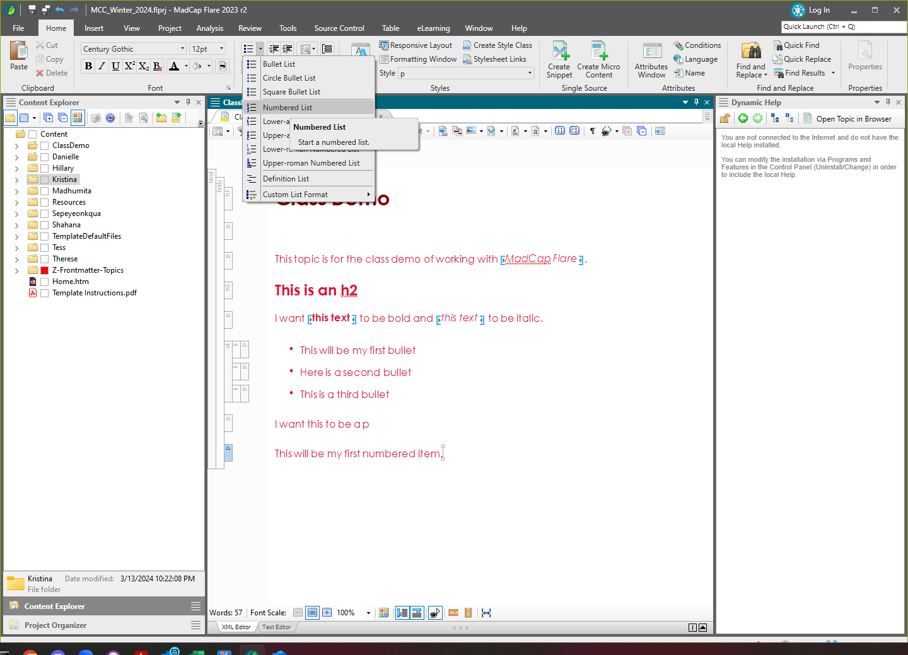
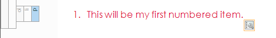

Since Flare topics are just HTML you can add an ol element in the text view, or you can use the Bullet List tool.

The paragraph becomes a paragraph in a list item in an ordered list.
You can also click the List Bullet icon twice to toggle the list off.
Similar to HTML, you can put lists inside of lists. In Flare, you can use the Move context menu to control the nesting of items. Also explore the List Actions.